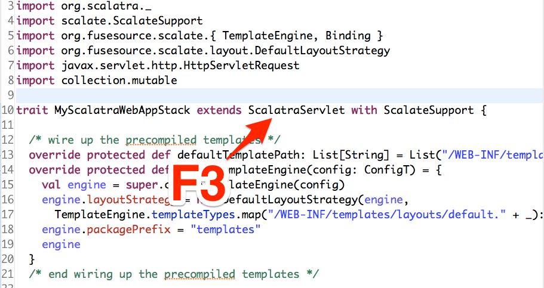
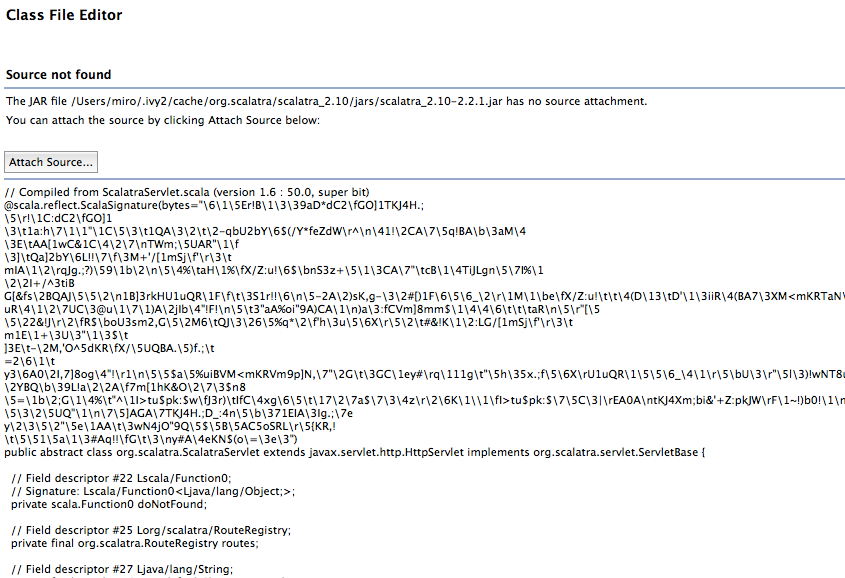
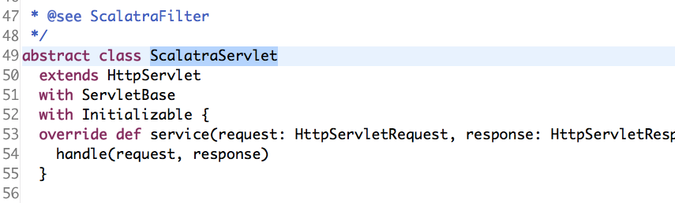

ScalatraでWebSocket
に辿りつけなかったので、そこまでのお話
Scalatraって？
RubyのSinatraっぽく書けるWebFramework.
class HelloWorldApp extends ScalatraFilter {
get("/") {
<h1>Hello, {params("name")}</h1>
}
}
XMLリテラルがあるから捗るね！
※ちなみにSinatra使ったこと無い／(^o^)＼WebSocket使えるの?
リポジトリにAtmosphereChat.scalaというWebSocketのサンプルが含まれている.
exampleの実行方法
# cloneしてくる
git clone git@github.com:scalatra/scalatra.git
# 移動してsbt
cd scalatra
sbt
# sbtの中で
container:start
# ブラウザでアクセス
open localhost:8080
exampleが壊れてたのでﾌﾟﾙﾘｸ
https://github.com/scalatra/scalatra/commit/39ba4a62de450d2ec22b358d24e9048d2dcec57b
diff
- defaultScripts = "/jquery/jquery-1.9.0.js" :: "/assets/js/bootstrap.min.js" :: Nil
+ defaultScripts = "/assets/js/jquery.min.js" :: "/assets/js/bootstrap.min.js" :: Nil
Scalatraプロジェクトの作り方
giter8を使います.
> g8 scalatra/scalatra-sbt
色々聞かれるので適当に答える
> g8 scalatra/scalatra-sbt
organization [com.example]:
package [com.example.app]:
name [My Scalatra Web App]:
servlet_name [MyScalatraServlet]:
scala_version [2.9.2]:
version [0.1.0-SNAPSHOT]:
色々作られる
.
├── README.md
├── project
│ ├── build.properties
│ ├── build.scala
│ └── plugins.sbt
├── sbt
└── src
├── main
│ ├── resources
│ │ └── logback.xml
│ ├── scala
│ │ ├── ScalatraBootstrap.scala
│ │ └── hoge
│ │ ├── HogeStack.scala
│ │ └── MyScalatraServlet.scala
│ └── webapp
│ └── WEB-INF
│ ├── templates
│ │ ├── layouts
│ │ │ └── default.jade
│ │ └── views
│ │ └── hello-scalate.jade
│ └── web.xml
└── test
└── scala
└── hoge
└── MyScalatraServletSpec.scala
実行方法
> cd project-dir
> sbt
> container:start
eclipseで開発できるようにする
sbt内で
eclipse
と実行すれば、eclipseにimport出来る形になる.
が！しかし！
宣言元にジャンプすると…
Oh… 読めない…
eclipseで開発できる(ry. その2
sbt内で
eclipse with-source=true
with-source=trueでライブラリのソースコードが関連付けされた状態でEclipseのプロジェクトが生成される
:情報源 https://github.com/typesafehub/sbteclipse/wiki/Using-sbteclipse
これで宣言元にジャンプできる
捗るね！
Scalatraで書いたコードを紹介
class HelloWorldApp extends ScalatraFilter {
get("/") {
<h1>Hello, {params("name")}</h1>
}
}
簡単なルーティング
get("/") {
<h1>Hello!</h1>
}
get("/user/:id") {
<h1>Id is {params("id")}</h1>
}
パラメータをOptionで取得
// /user?id=10
get("/user") {
val opt: Option[String] = params.get("id")
// idが無かったら400BadRequestを返す
opt match {
case Some(id) => <h1> ID is {id}</h1>
case None => halt(400)
}
}
getOrElseでスッキリ
// /user?id=10
get("/user") {
val id = params.getOrElse("id",halt(400))
<h1> ID is {id}</h1>
}
Hook
before(){
println("before!!!")
}
after(){
println("after!!!")
}
特定の領域だけ
before("/user"){
println("before!!!")
}
after("/user"){
println("after!!!")
}
色々なHTTPメソッド
get("/articles/:id") {
}
post("/articles") {
}
put("/articles/:id") {
}
delete("/articles/:id") {
}
以上!
また別の機会に
- atosphere
- WebSocket